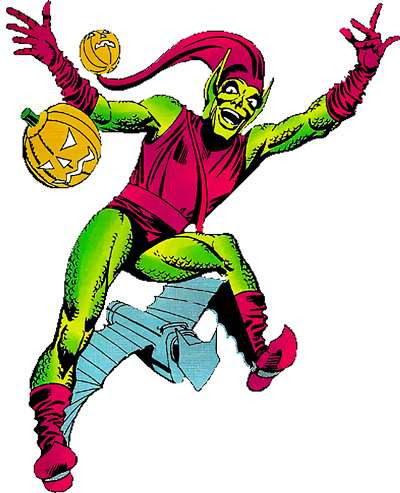

Sobre:
Seu nome verdadeiro é Peter Parker, um jovem estudante de ciência que ganha habilidades especiais após ser picado por uma aranha radioativa. Ele adquire força sobre-humana, agilidade, a capacidade de escalar paredes e um "sentido aranha" que o alerta sobre perigos iminentes. Após a morte de seu tio Ben, Peter assume a identidade do Homem-Aranha para combater o crime e proteger a cidade de Nova York, com a famosa frase "Com grandes poderes vêm grandes responsabilidades".
Aliados:
Mary Janne:
Mary Jane, ou mj pros mais íntimos, é o interesse romântico do nosso brother aranha.
Cavaleiro da Lua:
O Cavaleiro da Lua demonstrou ser um aliado muito necessário já que ambos heróis tem vilões em comum, como o Drácula.
Tio Ben:
Ele morreu :/
Vilões:
Abutre:
O abutre é um velho que conseguiu construir uma roupa que voa.
Duende Verde:
Um dos vilões mais do mal do homem aranha, ele matou a Gwen (paia).
Lagarto:
É um lagarto.